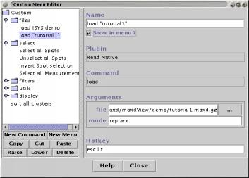

The Custom Menu allows quick access to frequently used commands. You can define submenus within the Custom Menu to group related commands together.
The custom menu can be found on the popup menu available in the main display window.
Custom menu commands can also be activated using a keyboard shortcut or hotkey. The key sequence used to execute the command is assigned using the editor.
Note that the custom menu and the hotkey functions are only available in the main display window and not in windows created by plugins.
To open the Custom Menu Editor choose "Custom->Edit" from the popup menu in the main display. The popup menu is triggered using the right mouse button (or Ctrl,Alt and the left mouse button).
The Custom Menu Editor is divided into three sections:

Use the "New Command" button to add a new entry to the currently selected Menu. The Add Command panel is displayed:

The Add Command panel is composed of three lists, "Plugins", "Commands" and "Arguments". When one of the "Plugins" is selected, the commands offered by that plugin are displayed. When one of the "Commands" is selected, the arguments (parameters) understood by that command are displayed.
Full details about each plugins commands and their arguments are given on the help page of the relevant plugin.
Built-in commands are can also be accessed via this panel.
Select a plugin and a command then use the "Add" button to add this new command.
Setting the name, arguments and hotkey
Select one of the Menus or Commands in the tree to display it's details in the fields on the right hand side of the panel.

Commands and Menus can be given a descriptive "Name" which defines the text that will used in the popup Custom Menu. By default, new commands are named "Plugin.command".
Most Commands understand one or more "Arguments". The Custom Menu Editor displays a list of the arguments of the selected command. The values for these arguments can be edited via the type-in fields.
Full details about the commands offered by each plugin are given on the help page of the repective plugin.
Commands can optionally have a "Hotkey". There are three methods for specifying the hotkey(s) that will run the command without you having to open the custom menu.
The prefix Alt-C followed by a Alt plus a unique character can be used as a hotkey. The required single character should be typed into the "Hotkey" field. For example, setting a command's "Hotkey" value to:
X
will cause the command to be executed when "Alt-C" then "Alt-X" are pressed.
The 'escape' key followed by any sequence of letters or digits can be used to trigger a command. The format for specifying the sequences is as follows:
esc F A 1
This hotkey specification causes the command to be run when the user presses 'escape' then types 'F' followed by 'A' followed by '1'. The sequence must begin with the string 'esc' and contain one or more letters or digits. Whitespace in the hotkey specification is ignored.
When using the 'escape' hotkey mode, the first hotkey specification to match the sequence of keys pressed will be executed. If you specify one commands hotkey as "esc B" then specifications such as "esc B 2" will not be accessible. The "esc B" command will always be chosen before the "esc B 2" specification can be seen.
The function keys can be used to trigger commands. The format to specify a function key hotkey is the string "fn" followed by a number in the range 1 to 16. For example, setting a command's "Hotkey" value to:
fn 12
will cause the command to be executed when "F12" is pressed.
[ExprData] Select all Spots Unselect all Spots Invert Spot selection Select all Measurements Unselect all Measurements Invert Measurement selection
[DataPlot] Set zoom scale Zoom in Zoom out Open Measurements Dialog Open Find Dialog Open Layout Dialog Open Colouriser Dialog Open Annotation Loader Options Dialog Open Custom Menu Editor Dialog New View Open Print Dialog Apply Filter Do Not Apply Filter
[maxdView] Rescan plugins Exit